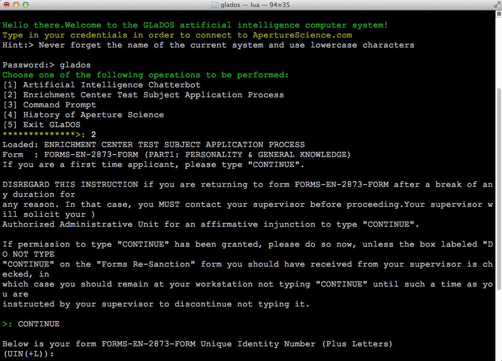

An artificially intelligent computer system that was launched by Aperture Laboratories.
GLaDOS is the main antagonist in the game Portal as well as the first half of its sequel, Portal 2.
Download
this program in order to chat with GLaDOS. Discover its technological innovation.

In case you experience
such issues
then restart system!
The current software was developed in 2013 and was written in Lua.